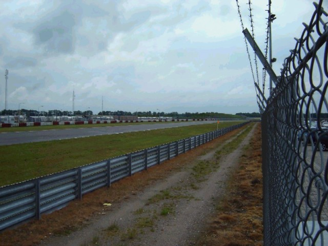
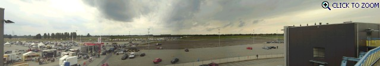
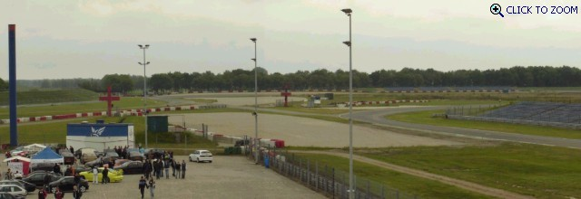
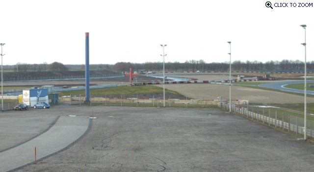
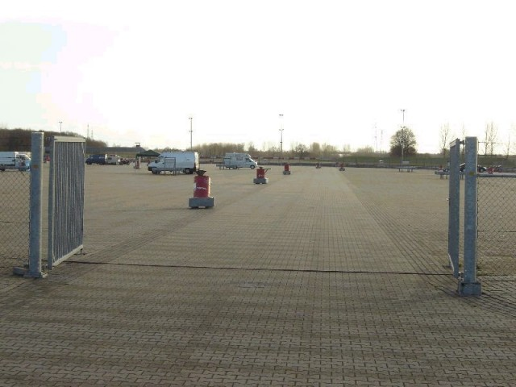
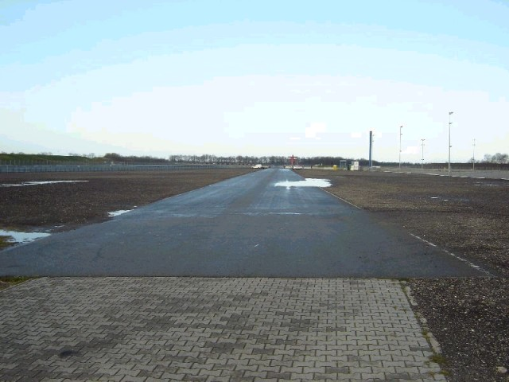
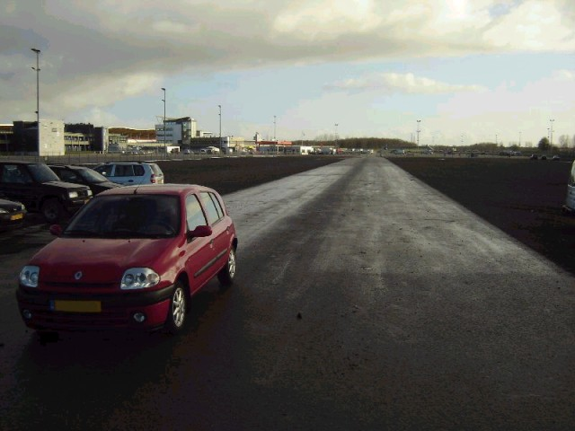
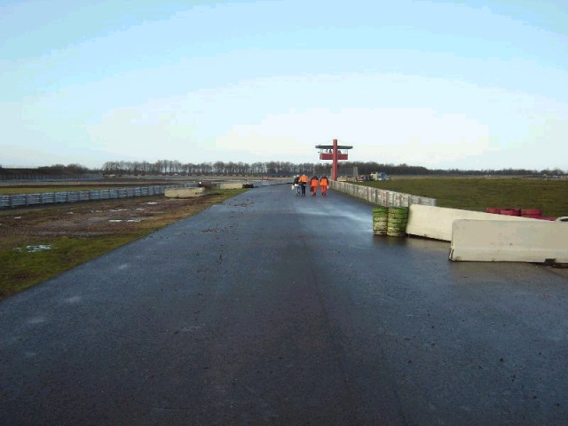

Numbers on the map represent the location where the photographs were taken. Click hyperlinks above to view the photographs.
Assen - Paddock Views [Page 3 of 5]
Contents || Entrance & Pitlane | Grandstand Views | Paddock Views | Pre-1984 (Part A) | Pre-1984 (Part B) || Home
Numbers on the map represent the location where the photographs were taken. Click
hyperlinks above to view the photographs.

14 - Photo taken in the direction of the
Veenslang.

P3 - The Paddock. [Click to Zoom In - 429kb]

P4 - Photo taken in May 2004 from the VIP
boxes, looking to the Stekkenwal and Hoge Heide. [Click to Zoom In - 169kb]

P5 - Taken from the same position as photo
P4 in April 2005, but on this one the Ruskenhoek is modified. [Click to Zoom In -
116kb]

15 - In the paddock you can still see the
layout from before 2002.

16 - A part of the circuit from before 2002
is still there.

17 - At the end of the straight from before
2002.

18 - At the end of the straight from before
2002, looking towards Stekkenwal.
Return to racingcircuits.net's Photo Archive Main Index
©2003, 2004 & 2005 Roelard Smit. Reproduced here with kind permission.